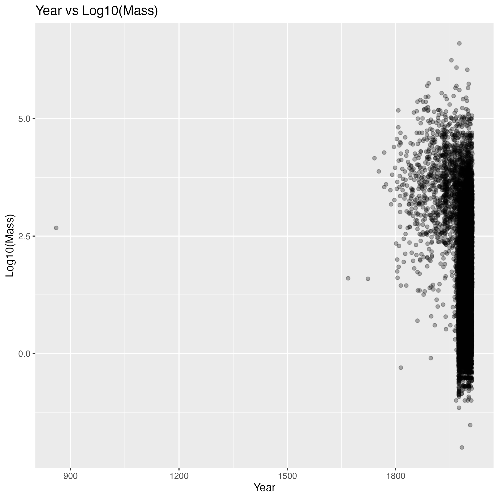
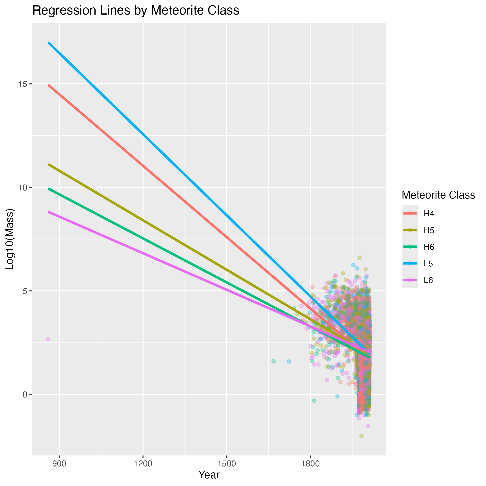
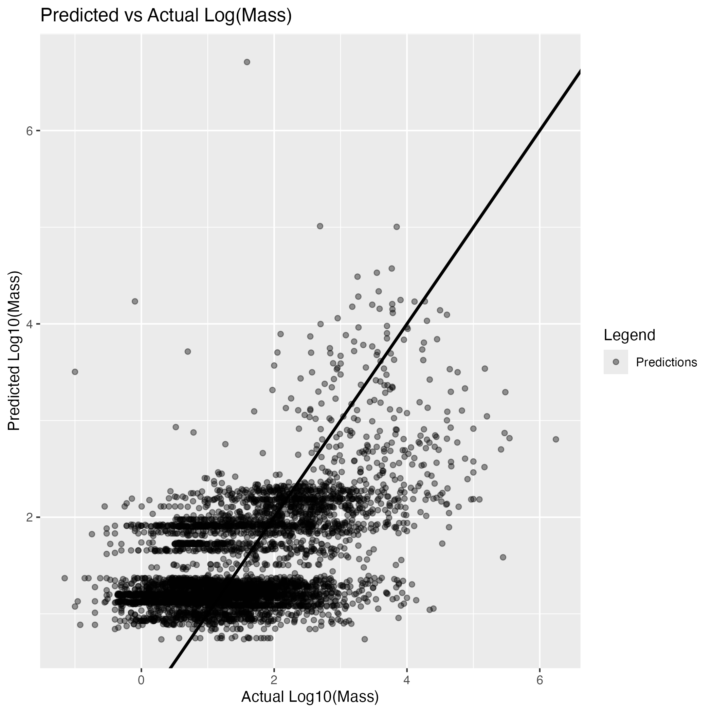

| Variable | Description |
|---|---|
mass (g) |
Mass of the meteorite sample (grams) |
year |
Year the meteorite was observed or found |
reclat |
Latitude of the landing or discovery location |
reclong |
Longitude of the landing or discovery location |
recclass |
Meteorite classification type |
fall |
Whether the meteorite was observed Fell or discovered later (Found) |
Predicting Meteorite Mass Using Temporal, Geographic, and Classification Features
1 Summary
This project delves into the NASA Meteorite Landings dataset to gain insight into how meteorite mass varies over time, location, and meteorite classification. Meteorite mass is a fundamental characteristic of a meteorite, and understanding what influences its variation can shed valuable light on the nature of meteorite populations (NASA 2024). The project applies data cleaning, exploratory visualization, and linear regression modelling to examine whether temporal trends, geographic patterns, and meteorite class interactions can explain the differences in meteorite mass. The model captures general trends in the data but shows limited accuracy for extreme values, suggesting that additional predictors may be required for improved performance.
2 Introduction
A meteorite is defined as a meteoroid that survives a fall through the atmosphere and hits land (NASA 2024). Meteoroids are stagnant rocks in space, with sizes ranging from a speck of dust to that of an asteroid. Most meteoroids are chunks or debris of larger bodies that have been destructed; these can be rocky, metallic, or a combination of both (NASA 2024). Meteorites that land on Earth are among the oldest and most diverse materials from the formation of our solar system. Studying meteorite landings allows scientists to discover and reconstruct key aspects of our planetary history, including the age and composition of planets and the extent to which materials were changed by previous impacts (NASA 2024).
Despite their historical and scientific relevance, meteorite landings are affected by a range of geographic aspects. Factors such as where a meteorite lands, when it is discovered, and how it is classified play a crucial role in determining how accurately they represent the true distribution of meteorites. In particular, meteorite mass is a fundamental characteristic that can be used to describe and compare meteorite samples across different classes and discovery conditions; it can be used to observe how it fluctuates against time, location, and meteorite class. This project leverages NASA’s Meteorite Landings dataset to explore these patterns. By building a linear regression model to predict the logarithm of meteorite mass based on year, class, location, and whether the meteorite was found or observed falling, this project aims to contribute to a deeper understanding of both the physical nature of meteorites and discovery patterns that shape the history of meteorites.
2.1 Predictive Question
Can meteorite mass be predicted using year, meteorite classification, geographic location, and fall status?
2.2 Dataset Description
This analysis uses the NASA Meteorite Landings dataset (NASA n.d.), which contains 24804 cleaned observations of meteorite landings and discoveries around the world spanning 860 to 2013. The variables used in this analysis are described in Table 1.
3 Methods
3.1 Data Loading and Cleaning
The NASA Meteorite Landings dataset was loaded from NASA’s public data source using 01_download_meteorite_data.R and saved to data/raw/meteorite_landings.csv. The following preprocessing steps were applied using 02_clean_meteorite_data.R:
- Observations with missing values in
mass,year,reclat,reclong,fall, andrecclasswere removed - Variable types were standardized:
mass,year,reclat, andreclongwere converted to numericfallandrecclasswere converted to categorical factors
- Observations with non-positive mass values were removed
- Because meteorite mass is highly right-skewed, a base-10 logarithmic transformation was applied to stabilize variance and make linear regression more appropriate
- To avoid sparse categories, only the 5 most frequent meteorite classifications were retained: L6, H5, H6, H4, L5
The cleaned data was saved to data/processed/meteorite_landings_clean.csv.
3.2 Exploratory Visualization
A scatterplot (Figure 1) was created to examine the relationship between year and log-transformed meteorite mass.

3.3 Train-Test Split
The cleaned dataset was randomly split into 19843 training observations (80%) and 4961 testing observations (20%). A fixed random seed of 2026 was used to ensure reproducibility.
The training set was used to fit the regression model, and the testing set was used to evaluate predictive performance.
3.4 Regression Model
A Gaussian linear regression model was fit using 04_model_meteorite_data.R with year, meteorite classification, longitude, latitude, and fall status as predictors, including an interaction term between year and classification:
\[\log_{10}(\text{mass}) \sim \text{year} \times \text{recclass} + \text{reclat} + \text{reclong} + \text{fall}\]
The interaction between year and meteorite class allows the relationship between time and meteorite mass to vary across classification types. The first six estimated model coefficients are shown in Table 2.
| Term | Estimate | Std. Error | Statistic | P-value |
|---|---|---|---|---|
| (Intercept) | 26.7994 | 1.9296 | 13.8885 | 0.0000 |
| year | -0.0123 | 0.0010 | -12.6234 | 0.0000 |
| recclassH5 | -8.1670 | 2.2716 | -3.5953 | 0.0003 |
| recclassH6 | -10.8351 | 2.4055 | -4.5043 | 0.0000 |
| recclassL5 | -0.9235 | 2.6686 | -0.3460 | 0.7293 |
| recclassL6 | -11.4928 | 2.0840 | -5.5148 | 0.0000 |
4 Results
4.1 Regression Lines by Meteorite Class
Figure 2 shows log10(mass) versus year for the 5 most common meteorite classes, with regression lines observed for each class.

Figure 2 reveals a downward trend in predicted log10(mass) over time across all 5 classes. All classes exhibit decreasing predicted mass over time, with slopes differing slightly across classes. This reflects the interaction between year and meteorite classification included in the model. Recent years show a greater density of smaller-mass meteorites, which is consistent with improvements in detection technology over time that allow smaller meteorites to be recorded in more recent periods.
4.2 Predictive Performance: Model Evaluation
Figure 3 shows a scatterplot comparing predicted and actual log10(mass) values on the test set.

As shown in Figure 3, predictions are more concentrated than actual values, particularly for extreme masses, indicating that the model captures general trends but does not fully account for high-variability outliers. Larger meteorites exhibit greater prediction variability.
Temporal, geographic, and compositional characteristics all contribute meaningfully to explaining variation in meteorite mass, though the available predictors alone are not sufficient for highly accurate prediction of extreme values.
5 Discussion
The analysis suggests that meteorite mass can be partially predicted using year, meteorite classification, geographic location, and fall status, though with moderate accuracy. The model captures meaningful systematic patterns in the data, but as shown in Figure 3, predictions are concentrated within a narrow range and struggle to account for extreme mass values, indicating that these predictors alone are not sufficient for highly accurate prediction.
This study explored how characteristics of meteorite landings relate to meteorite mass. Using the NASA Meteorite Landings dataset, we built a linear regression model predicting the logarithm of meteorite mass (log_mass) based on the year of discovery, meteorite class (recclass), geographic coordinates (latitude, and longitude), and whether the meteorite was observed falling or found later (fall) (NASA n.d.). Interaction terms between year and meteorite class were also included to capture class-specific temporal trends. The dataset used in this analysis comes from the NASA Meteorite Landings database, which compiles meteorite discovery records including mass, location, classification, and year of fall or discovery.
5.1 Summary of Findings
Several meaningful patterns emerged from the regression model. Most notably, year showed a statistically significant negative relationship with meteorite mass; the negative coefficient for year suggests that more recently discovered meteorites tend to have smaller masses compared to earlier discoveries (NASA 2024). This downward trend is clearly visible across all five classes in Figure 2. A plausible explanation is that improvements in detection technology and scientific monitoring have made it easier to detect smaller meteorites that would previously have gone unnoticed. As meteorite observation networks and scientific cataloguing efforts have expanded over time, the number of recorded meteorites has increased significantly.
Meteorite class also plays an important role in determining mass. Several classes, including H5 and H6, showed statistically significant differences in predicted mass relative to the reference class, reflecting differences in mineral composition, metal content, and thermal history (Natural History Museum n.d.). These physical differences influence how meteorites form, fragment, and survive atmospheric entry. For example, different chondrite groups originate from different parent bodies in the asteroid belt and may therefore exhibit variation in density and structural composition (Lauretta and McSween 2008).
As shown in Figure 2, the interaction terms between year and meteorite class produce noticeably different slopes across classes. This indicates that the temporal trend in mass varies across meteorite types, likely due to these same compositional and structural differences, with some meteorite classes exhibiting stronger temporal trends in mass than others. Planetary science research suggests that meteorites originate from different asteroids and parent bodies, meaning that different classes can possess distinct compositional and structural characteristics (Lauretta and McSween 2008). These differences may influence how meteorites fragment during atmospheric entry and how frequently they are recovered.
Geographic location also showed statistically significant relationships with meteorite mass, though with relatively small coefficient magnitudes. These effects likely reflect observational and recovery bias rather than true physical differences in mass distribution, as meteorites are easier to detect in sparsely vegetated or lightly populated environments such as deserts or polar regions where fragments remain visible and well preserved (Smithsonian Institution n.d.; Natural History Museum n.d.).
Finally, fall status (Fell vs. Found) was associated with systematic differences in mass. Meteorites classified as Found tended to have lower predicted mass values than those directly observed falling, likely because smaller meteorites often go unnoticed during atmospheric entry and are only discovered later through geological surveys or scientific expeditions. As shown in Figure 3, the model’s predictions are concentrated within a relatively narrow range despite the wide spread of actual log10(mass) values. This suggests the model captures the central tendency of meteorite mass well but struggles to predict both very large and very small meteorites accurately, likely due to the high variability in mass that the available predictors alone cannot fully explain.
5.2 Were These Findings Expected?
Many of the observed patterns are consistent with expectations from meteoritics and observational science. The negative relationship between discovery year and mass aligns with historical developments in meteorite detection. Earlier meteorite records were typically limited to large and visually dramatic falls that were easily observed or caused noticeable damage (NASA 2024). In contrast, modern monitoring networks, satellite tracking systems, and increased scientific interest have allowed researchers to catalogue many small meteorites.
Similarly, the importance of meteorite class was anticipated. Meteorite classifications reflect fundamental differences in mineral composition, iron content, and thermal history, which influence how meteorites fragment during atmospheric entry (Lauretta and McSween 2008). Consequently, it is reasonable that certain classes are associated with systematically different mass distributions.
Geographic effects likely reflect detection and preservation bias rather than actual physical differences in meteorite mass distribution. Certain environments preserve meteorites more effectively or make them easier to identify, which can influence the spatial distribution of recorded meteorite discoveries (Natural History Museum n.d.).
Overall, the model results align with both scientific expectations and known observational biases present in meteorite discovery trends.
5.3 Potential Impact of Findings
These findings contribute to several areas of research. Most directly, they improve our understanding of meteorite detection biases; recognizing how factors such as location, observation method, and historical time period influence meteorite records allows researchers to better interpret datasets and avoid misleading conclusions about meteorite distributions (NASA n.d.). This in turn may support improvements in meteorite search strategies, as identifying regions and environmental conditions associated with higher detection rates could help scientific expeditions prioritize recovery efforts more effectively (Natural History Museum n.d.). The analysis more broadly contributes to planetary science research. Meteorites provide valuable information about the early solar system, asteroid formation, and planetary materials, and understanding patterns in their characteristics helps scientists better interpret recovered samples and reconstruct the processes that shaped our solar system. Such models may also play a role in impact risk assessment (Lauretta and McSween 2008; Smithsonian Institution n.d.). While most meteorites are small and harmless, analyzing long-term mass distribution and fall patterns improves our understanding of atmospheric entry processes and impact probabilities (NASA 2024).
5.4 Limitations
One limitation of this analysis is that the regression model assumes linear relationships between the predictors and the log-transformed meteorite mass. While this simplifies interpretation, meteorite mass distributions may involve nonlinear relationships or additional physical variables not captured in the dataset. Additionally, meteorite discovery records are strongly influenced by observational and recovery biases, meaning the dataset may not perfectly represent the true global distribution meteorites.
5.5 Future Work
This analysis also raises several interesting questions for future research. One potential direction would be to examine how detection bias affects meteorite records over time by incorporating changes in observational technologies, satellite monitoring systems, or meteorite tracking networks into future models. Investigating regional meteorite discovery patterns could also be promising, as deserts and polar regions have yielded large numbers of discoveries due to favorable preservation conditions, and a spatial analysis incorporating environmental variables could provide deeper insight into these patterns (Natural History Museum n.d.). Future work could also explore more flexible modeling approaches. While linear regression provides interpretable results, methods such as random forests or gradient boosting could potentially capture more complex relationships between meteorite characteristics. Incorporating additional meteorite properties, such as chemical composition, density, or atmospheric entry velocity, could further improve predictions of meteorite mass and provide deeper insight into fragmentation processes (Lauretta and McSween 2008).
6 References
Lauretta, D. S., and H. Y. McSween. 2008. Meteorites and the Early Solar System II. The University of Arizona Press.
NASA. n.d. “Meteorite Landings.” NASA Open Data Portal. https://data.nasa.gov/dataset/meteorite-landings.
———. 2024. “Meteor & Meteorite Facts.” NASA Science. https://science.nasa.gov/solar-system/meteors-meteorites/facts/.
Natural History Museum. n.d. “Types of Meteorites.” Natural History Museum. https://www.nhm.ac.uk/discover/types-of-meteorites.html.
Smithsonian Institution. n.d. “Meteorite Landing Data.” Smithsonian Institution Repository. https://repository.si.edu/handle/10088/20577.